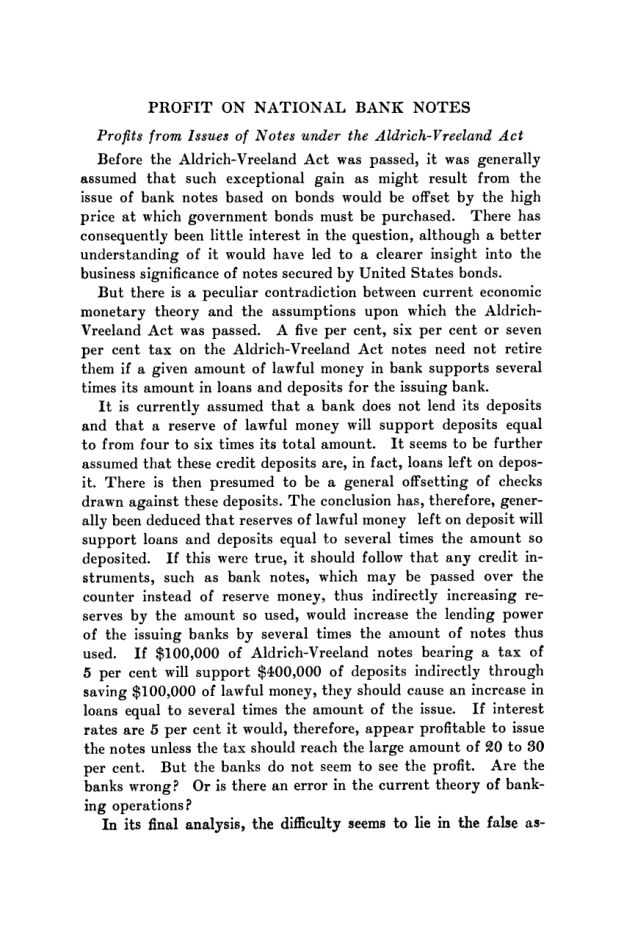

Bell, 1912: por que os bancos não viam lucro nas notas?
Leitura: 7 min
Se cada dólar de notas sustentasse vários de empréstimos, emitir pagaria até com imposto alto. Bell mostra que o banco individual não multiplica crédito; o sistema é que multiplica.


A Lei Aldrich-Vreeland permitia aos bancos emitir notas de emergência sujeitas a um imposto de 5%, 6% ou 7%. A teoria monetária corrente dizia que uma reserva em moeda legal sustentava depósitos de quatro a seis vezes o seu valor. Se fosse assim, US$ 100 mil em notas que poupassem US$ 100 mil de moeda legal sustentariam US$ 400 mil de depósitos, e emitir valeria a pena mesmo com um imposto de 20% a 30%.
“Mas os bancos não parecem ver o lucro. Estão errados os bancos?” (“But the banks do not seem to see the profit. Are the banks wrong?”)
Spurgeon Bell, da University of Missouri, sustenta que o erro estava na teoria. Os economistas supunham que o banco não empresta seus depósitos e que os empréstimos ficam depositados no próprio banco que os concede. Para Bell, o empréstimo costuma vir acompanhado de um saque quase igual ao valor emprestado.
Quem multiplica o crédito, o banco ou o sistema?
O exemplo de Bell: um depositante leva US$ 100 mil ao banco A, que empresta US$ 75 mil e retém US$ 25 mil de reserva. O tomador saca e paga seus credores, que depositam o dinheiro nos bancos B, C e D. Esses emprestam de novo, menos a reserva, e o processo se repete. Num prazo de noventa dias, os mesmos US$ 100 mil podem sustentar empréstimos e depósitos de quatro a oito vezes o valor original, mas no conjunto dos bancos, e não no banco A.
Bell lembra uma polêmica no Journal of Political Economy. O professor W. C. Webster afirmara que 85% a 90% dos depósitos eram criados por empréstimos; o comissário bancário de Oklahoma, A. M. Young, respondeu que nem 25% o eram. Para Bell, o comissário tinha razão quanto ao banco individual.
Em que a nota bancária difere do cheque?
Era comum ler que notas bancárias são como cheques. Bell insiste na diferença: as notas servem aos clientes para os quais o cheque não serve, os que precisam de papel-moeda. Ao passar notas pelo balcão em vez de moeda legal, o banco aumenta indiretamente suas reservas, e seu poder de emprestar cresce algo mais que o valor das notas. O poder de emprestar do conjunto dos bancos, pelo redepósito, cresce várias vezes esse valor.
Segundo Bell, as teorias erraram por atribuir o maior poder de emprestar ao aumento das reservas, e não ao aumento dos depósitos. As notas poderiam deslocar notas do Tesouro e certificados de ouro e prata em circulação, e a emissão total chegaria perto de US$ 1,2 bilhão, o montante que o plano Aldrich permitiria à Reserve Association of America antes do imposto de 5%.
Quanto rendia uma nota de emergência?
Bell supõe que os saques equivalham a 75% de cada empréstimo. Então US$ 100 mil em notas sustentam US$ 133.333 em empréstimos, que a 5% ao ano rendem US$ 555,55 por mês. A despesa de emissão, calculada pelo Comptroller of the Currency, é pequena; o imposto, não: 5% no primeiro mês custam US$ 417, e o ganho líquido cai para US$ 133.
E as notas garantidas por títulos federais?
Para as notas comuns, Bell parte da conta do Comptroller em seu relatório de 1910: US$ 100 mil em notas garantidas por títulos do Panamá a 2%, com vencimento em 1930. As deduções somam US$ 590,08, e os juros de 6% sobre os US$ 101.005 pagos pelos títulos somam US$ 6.060,30. Sobra um lucro de US$ 1.349,62 acima de 6% sobre o investimento.
Bell lista cinco hipóteses da conta e diz que o erro principal está na quarta: a de que o preço dos títulos federais só muda pela amortização. Os grandes banqueiros sabiam que esses títulos eram um investimento de risco incomum, sujeitos a reformas monetárias e a mudanças de política do Tesouro. Bell cita a conclusão de Wesley C. Mitchell, que comparara seus rendimentos com os de outros títulos.
Para Mitchell, os títulos do governo “se mostraram os menos estáveis entre os títulos cujos rendimentos foram calculados”. (“have proved the least stable among the bonds for which yields have been computed”)
Por que o interior emitia mais que Nova York?
Em 1º de setembro de 1910, a circulação equivalia a 38,4% do capital dos bancos nacionais de Nova York e a 75,6% do capital dos bancos do interior. Para Bell, a razão está nos recursos ociosos. O banco do interior costumava ter de 8% a 10% dos depósitos acima da reserva exigida e pouca chance de aplicá-los; comprando títulos e depositando as notas no correspondente, obtinha 4% sobre fundos parados.
O resgate pesava sobre as grandes cidades. No ano encerrado em 31 de outubro de 1910, foram resgatados cerca de US$ 504 milhões em notas, dos quais US$ 230,9 milhões vieram de Nova York. Os bancos pequenos mandavam as notas gastas ao correspondente; as grandes cidades viravam depósito de notas redundantes.
Daí o paradoxo final. Quando as notas eram necessárias, nenhum banco podia emiti-las, porque a emissão contraía seu próprio poder de emprestar ao mesmo tempo que ampliava o dos bancos centrais do sistema. O aumento de notas no pânico de 1907, nota Bell, veio de medidas do Tesouro, que liberou títulos e vendeu certificados com direito de emissão.
Na minha leitura
Na minha leitura, o artigo é um exercício de distinção entre o equilíbrio do banco individual e o do sistema. O que é verdade para o conjunto, que reservas sustentam um múltiplo de depósitos, não é verdade para cada banco, que perde para os outros quase tudo o que empresta. Bell usa a distinção para explicar uma escolha concreta, a recusa dos bancos a emitir, e não apenas para corrigir um manual.
A consequência de política é clara no texto: um instrumento de liquidez que onera quem o usa e beneficia os demais não será usado quando mais se precisa dele. A reforma que viria com o Federal Reserve, em 1913, tratou exatamente desse problema, ao deslocar a emissão elástica para uma instituição central.
Glossário
- National bank notes
- papel-moeda emitido pelos bancos nacionais americanos, garantido por títulos federais depositados no Tesouro.
- Lei Aldrich-Vreeland (1908)
- lei posterior ao pânico de 1907 que autorizava notas de emergência sujeitas a imposto crescente.
- Lawful money
- moeda que a lei admitia como reserva bancária, como ouro, prata e notas do Tesouro.
- Comptroller of the Currency
- órgão federal que supervisiona os bancos nacionais e controla sua emissão de notas.
- Central reserve city
- cidade, como Nova York, Chicago e St. Louis, cujos bancos guardavam as reservas dos demais.
- Fundo de resgate de 5%
- depósito em moeda legal que cada banco mantinha no Tesouro para resgatar suas notas.
- Plano Aldrich
- proposta de reforma monetária que criaria a Reserve Association of America, com emissão central de notas.
Fontes
- Profit on National Bank Notes — Spurgeon Bell (University of Missouri) (pp. 38–60). JSTOR · Internet Archive (PDF)
- Edição completa, com os demais artigos: Nº 117 do Arquivo.
Documento em domínio público (EUA, publicado antes de 1931), via JSTOR Early Journal Content e Internet Archive. Resumo e comentário do autor deste site, sem afiliação com a American Economic Association. Encontrou um erro? Escreva: a correção é publicada no próprio texto, com data.
← Holcombe, 1912: um salário mínimo legal nos Estados Unidos? ↑ Nº 117 · Março de 1912: salário mínimo, notas bancárias e progresso